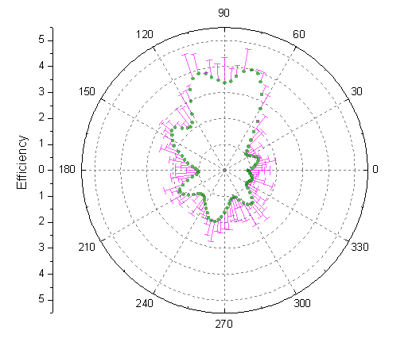
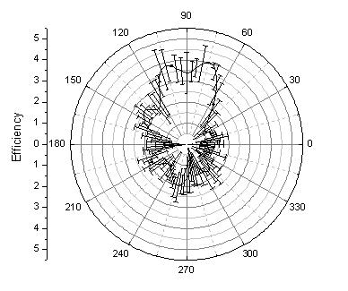
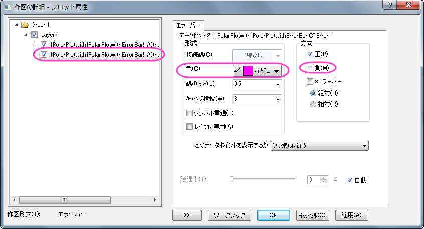
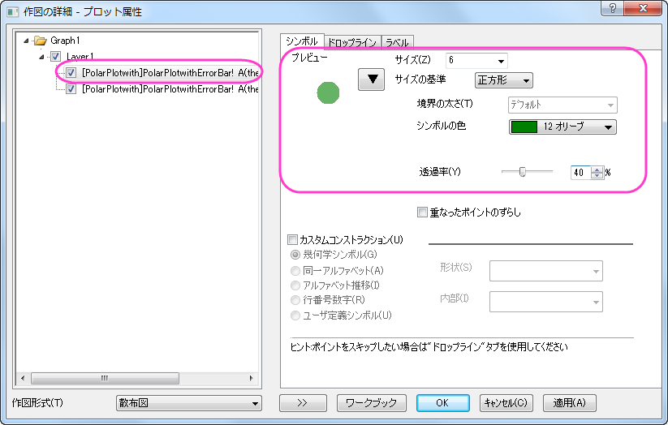
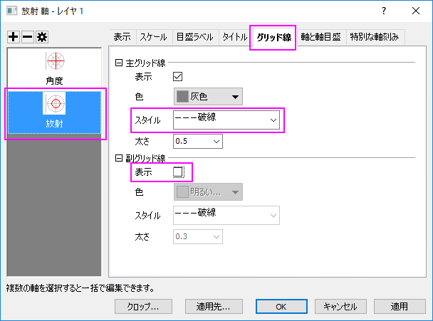
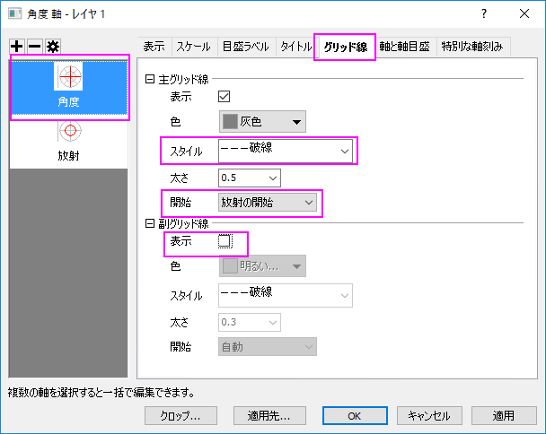

エラーバー付き極座標グラフ
Polar-ErrBar
サマリー
このチュートルアルは、エラーバー付き極座標グラフを作成する方法を紹介します。
- 
学習する項目
このチュートリアルでは、以下の項目について説明します。
- エラーバー付き極座標グラフを作成する
- 作図の詳細ダイアログと軸ダイアログを使ってグラフを編集する
ステップ
- <Origin EXE フォルダ>\Samples\Graphing\ にあるPolarPlotwithErrorBar.datフォルダをインポートします(必要なOriginのバージョン: 2015 SR0)。あるいは、このデータファイルをダウンロードして直接Originにインストールしてください。
- カーソルを列Cの上に移動し、カーソルの形が黒い下向き矢印になる場所(列の上部)でクリックして列を選択します。右クリックし、列XY属性の設定でYエラーバーを選択し、列の属性を変更します。
- エラーバー付き極座標グラフを作図するには、全ての列を選択します。作図：等高線：θrz極座標等高線と選択するか、3Dおよび等高線ツールバーのθrz極座標等高線θ(x)
r(y)ボタンをクリックしてグラフを作成します。
- 
- グラフをダブルクリックして、作図の詳細ダイアログを開きます。 エラーバープロットを左側パネルで選択し、エラーバータブで色を深紅色に設定し、方向グループの負のチェックを外します。
- 
- 作図の詳細ダイアログで左側パネルが見えていない場合、左下にある左向きの二重矢印をクリックすると表示されます。左側パネルではユーザが編集しているグラフのレイヤやデータの階層的な情報がまとめられています。また、ダイアログの下部には作図形式も表示します。上のプロットを選択し、この作図形式を折れ線から散布図に変更します。この操作で、右側パネルにシンボルタブが追加されます。
シンボルタブを開き、シンボルのスタイル、色、透過率を下図のように設定します。シンボルの色を設定する際には、ドロップダウンの中の指定色オプションから目的の色を選択します。
OKをクリックして、ダイアログを閉じます。
- 
- つぎに、放射軸を編集します。放射軸は方位軸(縦や横の軸)の間にある円形に広がるグリッド線を説明する軸です。グラフの左側にある垂直軸（放射軸）をダブルクリックして軸ダイアログを開きます。グリッド線
ページの左側のパネルで放射 を選びます。主グリッド線のスタイル を 破線にし、副グリッド線の表示のチェックを外します。
- 
- 同じ手順で角度軸のグリッド線を編集します。角度軸は円の中心から直線でグラフの端まで伸びている軸です。グリッド線
ページの左側のパネルで角度 を選びます。主グリッド線のスタイル を 破線にし、開始 をto 放射の開始にして、副グリッド線の表示のチェックを外します。OK
をクリックして変更を保存します。
- 
- 完成したグラフは下図のようなグラフになります。